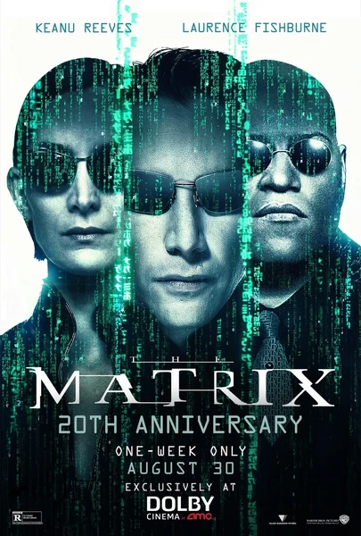

Фильм · 1999 · Боевик, Фантастика
Программист Томас Андерсон, а по ночам хакер Нео, чувствует, что мир ошибается — и это действительно так: реальность — это симуляция, созданная машинами для сбора энергии со спящих людей. Выбор красной таблетки означает принятие правды, физической боли и ответственности без гарантий. Братья Вачовски объединили киберпанк Гибсона, дзен-буддизм, Бодрийяра и трюки с тросами в жанр, который навсегда изменил Голливуд. «Жизнь в Матрице» перестала быть метафорой и стала частью лексики: красная таблетка, Агент Смит, синяя таблетка, побег из тюрьмы.
Programmer Thomas Anderson, by night the hacker Neo, senses the world is wrong — and he is: reality is a simulation built by machines to harvest energy from sleeping humans. Choosing the red pill means accepting truth, physical pain and responsibility without guarantees. The Wachowskis fused Gibson's cyberpunk, Zen Buddhism, Baudrillard and wire-fu into a genre that changed Hollywood for good. 'Living in the Matrix' stopped being a metaphor and became vocabulary: red pill, Agent Smith, bluepill, jailbreak.